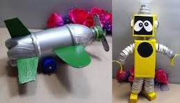

Bienvenido a Juguetes Reciclados
"Bienvenido a Juguetes Reciclados, donde damos nueva vida a materiales con creatividad y conciencia ecológica. Descubre cómo puedes contribuir al cuidado del medio ambiente a través de nuestros juguetes únicos, hechos con amor y dedicación a partir de materiales reciclados. ¡Transformamos residuos en diversión responsable para toda la familia!"
Descubre cómo transformar materiales reciclados en juguetes creativos y amigables con el medio ambiente. ¡Únete a nosotros para hacer del mundo un lugar más verde y divertido! Junto a tus hijos conocerás un nuevo y apasionante mundo, lo cual fomentará el desarrollo de la creatividad de tus hijos al observar una nueva obra.